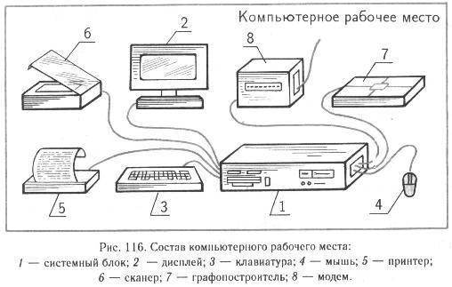

Разделы
КОМПЬЮТЕР И ИНФОРМАЦИЯ
Большую помощь человеку в переработке информации оказывают компьютеры. Мы с вами познакомимся с компьютером фирмы IBM PC/AT. Выясним, с помощью каких устройств компьютер получает, передает, хранит и обрабатывает информацию. В состав компьютерного рабочего места входят различные устройства. Самая главная часть компьютера — системный блок. В нем находится блок питания компьютера, электронная схема с процессором, винчестер и дисководы для гибких магнитных дисков. С помощью процессора компьютер обрабатывает информацию. Информация, предназначенная для обработки или уже обработанная, хранится на магнитных дисках. Если это сменные диски, то через них может происходить обмен информацией с другими компьютерами. Винчестер — это несменный жесткий магнитный диск. Он удобен тем, что обладает очень большой емкостью.
Однако человек не может прочитать информацию, записанную на магнитном диске. Эту информацию надо перевести в понятную для него знаковую форму. Для этой цели служит монитор, или дисплей, компьютера, предназначенный для изображения текстовой и графической информации. Всю информацию, получаемую от компьютера, человек может не запомнить. Поможет в этом устройство, которое называется принтером. Принтер позволяет распечатывать информацию на бумаге в знаковой и графической форме. Но размеры принтера ограничены, а если придется рисовать большие графики или чертить чертежи, то здесь незаменимым помощником будет графопостроитель. Устройства, входящие в состав компьютерного рабочего места, показаны на рисунке 116
Новости
09.02.11
Поздравляем всех с новым семестром! Желаем сдать экзамен по "Интернет- технологиям" на отлично ...
18.03.11
Появился новый ноутбук Lenovo Y550A1-i724G500B-B Подробней…
20.05.11
Желаем всем студентам 4 курса ОТИ НИЯУ МИФИ получить ВСЕ зачеты и допуски к сессии Подробней…